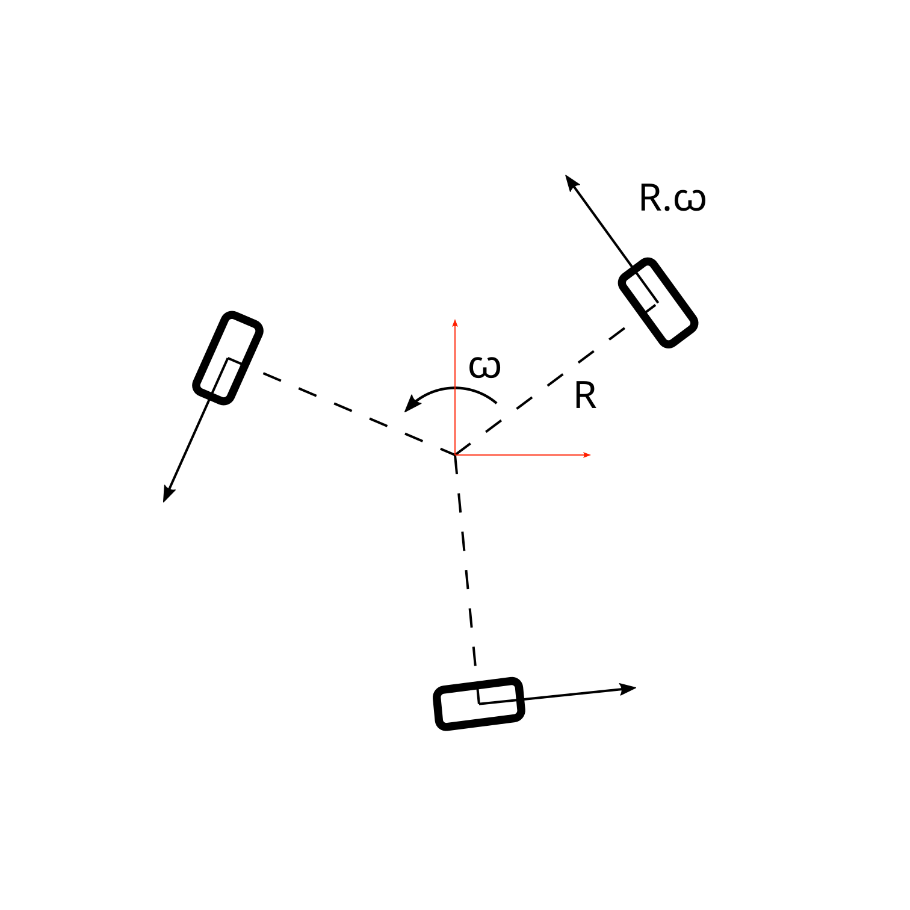
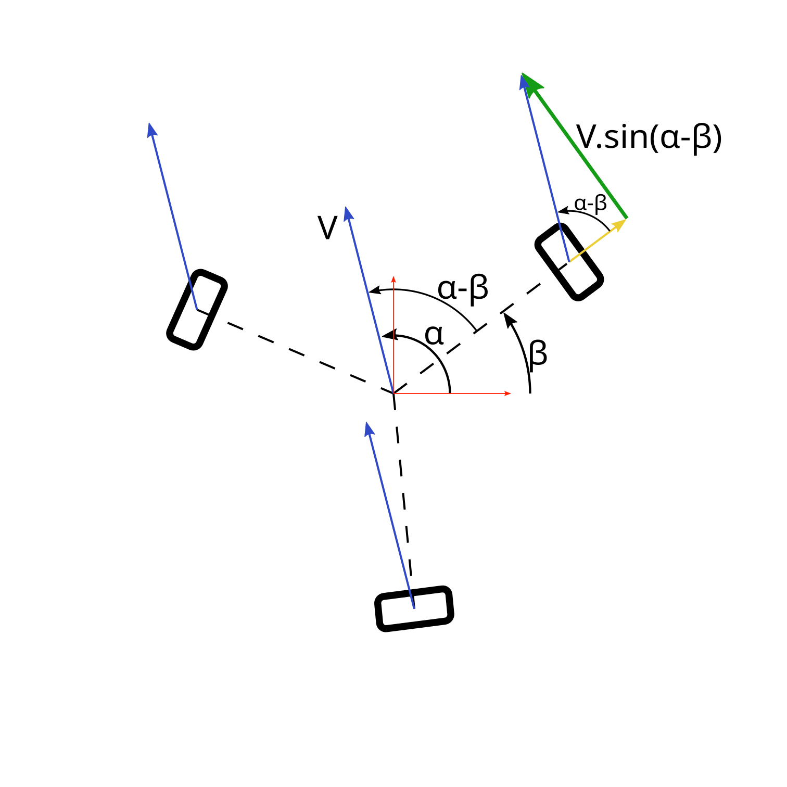

Base holonome
Considérons une roue, les calculs seront identiques pour les autres roues.
Rotation
Commençons par le plus simple : la rotation du robot sur lui-même. Le robot doit simplement faire tourner ses roues à la même vitesse.
Les roues sont placées à égale distance \(R\) du centre du robot, leurs axes passant par le centre du robot.
Si le robot tourne sur lui-même à une vitesse angulaire \(\omega\), la vitesse d'une roue sera donc \(Vtr = R.\omega\).

Translation
La roue est placée à un angle \(\beta\) par rapport au repère du robot. Cet angle est fixé par la construction du robot.
Supposons que le robot se déplace en translation pure à une vitesse \(V\) qui forme un angle \(\alpha\) avec le repère du robot.
La vitesse tangentielle de la roue sera donc de \(Vtr = V.sin(\alpha-\beta)\).
La roue étant en translation libre sur l'axe radial, la vitesse radiale peut être ignorée.

Composition des vitesses, et décomposition selon les axes du robot
Par la composition des vitesses, la vitesse tangentielle totale d'une roue est : \(Vtr = V.sin(α-β) + R.ꞷ\)
On connait l'identité trigonométrique : \(sin(\alpha-\beta) = sin(\alpha).cos(\beta) - cos(\alpha).sin(\beta)\)
On peut donc écrire
\[Vtr = V.sin(\alpha).cos(\beta) - V.cos(\alpha).sin(\beta) + R.\omega\]
Si on décompose la vitesse \(V\) du robot selon ses axes, on a :
- \(Vx = V.cos(\alpha)\)
- \(Vy = V.sin(\alpha)\)
On en déduit donc :
\[Vtr = Vy.cos(\beta) - Vx.sin(\beta) + R.\omega\]
Forme matricielle
Pour 3 roues placées respectivement aux angles \(\beta1\), \(\beta2\) et \(\beta3\), on aura alors :
\[ \begin{pmatrix}v1\\v2\\v3\end{pmatrix}=\begin{pmatrix}-sin(\beta1) & cos(\beta1) & R\\-sin(\beta2) & cos(\beta2) & R\\-sin(\beta3) & cos(\beta3) & R\end{pmatrix}\times\begin{pmatrix}Vx\\Vy\\\omega\end{pmatrix} \]
Cinématique inverse
On a calculé les commandes à donner aux moteurs pour avoir le déplacement désiré. On voudrait maintenant déduire les déplacements du robot des déplacements de chaque moteur.
On avait : \(m=D.V\)
La matrice pseudo-inverse de Moore-Penrose \(D^+\) permet de résoudre ce problème. On a alors : \(V=D^+.m\)
Elle peut être calculée avec numpy avec la fonction numpy.linalg.pinv.